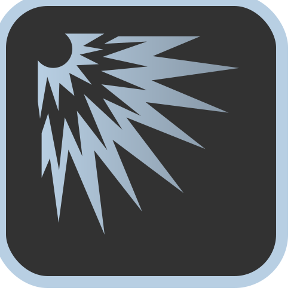
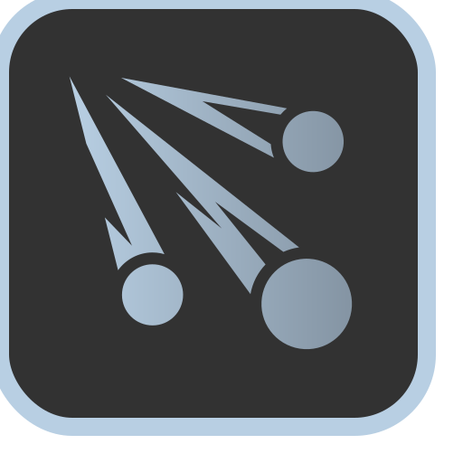
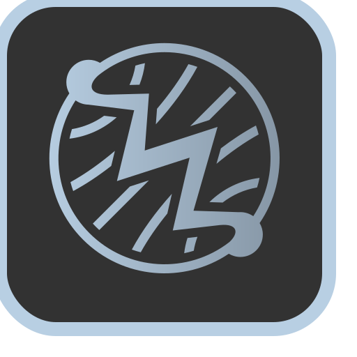
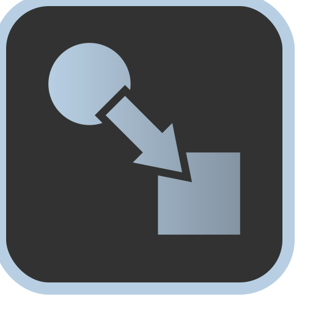
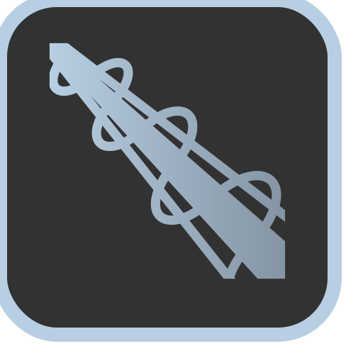
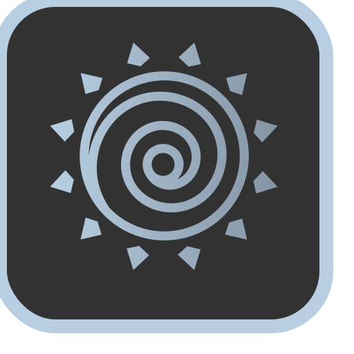
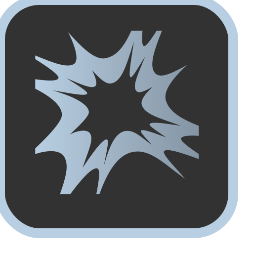
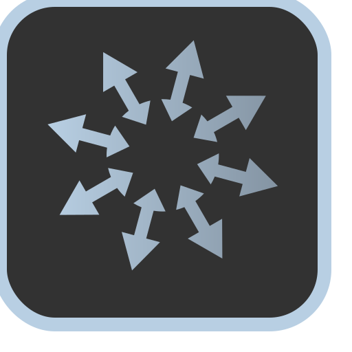
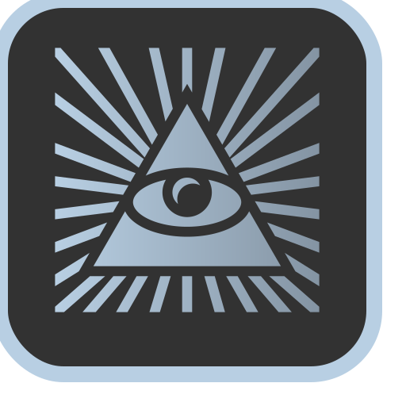

Evoker
Passive Skill. Every point in Evoker increases the damage of Empowered Evocation ability by 0.0
Spell Burst
Your targeted evocation spells may now affect all creatures in a 10 foot radius from the target(s).Flexible Evoker
Your Empowered Evocation damage bonus and Sculpt Spells trait now applies to all spells that deal damage, not just evocation spells.Spell Transmutation
0 times per day, when you cast a spell that deals a type of damage from the following list, you can change that damage type to one of the other listed types: acid, cold, fire, lightning, poison, and thunder.Empower Spell
0 times per day, you may cast an evocation spell as if it were using a spell slot 3 levels higher (maximum 9th level spell).Evocation Mastery
Choose one evocation spell 3rd level or lower. You can use this spell at its lowest level at will without using spell slots and without preparation. You may change which evocation spell this is on long rest.
Widen Spell
0 times per day, you can double the radius/numerics of any evocation area of effect spell.
Arcane Barrage
Your empowered evocation now applies to multiple missiles when using a spell that has multiple missiles/rays.Elementalist
Your elemental spells improve to have the following effect:- Lingering Burn: Fire and acid spells now burn in addition to their normal damage. Whenever a creature is struck by/fails its saving throw against a fire or acid spell, they take additional burn damage equal to the minimum dice roll of the spell at the start of their next turn.
- Shattering Cold: Cold spells reduce the speed of the target by half until the end of your next turn if they fail their saving throw against the spell's dc (if the cold spell in question does not have a saving throw, roll a constitution save). Additionally, all of your cold spells are now capable of critically striking. Roll a d20 when casting any cold spell. If you roll a 20, it critically strikes with a crit modifier of x3.
- Shock and Awe: Lighting spells stun targets, thunder spells deafen targets, and radiant spells blind targets if they fail a constitution saving throw against your spell dc. If the listed spell already has this effect, targets have disadvantage on the roll.

Overchanneler
You may now use overchannel on any spell, regardless of level. You also may use Overchannel an additional time without suffering adverse effects.Phoenix Form
Once per day, you may enter Phonenix Form for 1 minute. You also automatically enter phoenix form once per day on the turn after you drop to 0 hit points, but if you have already used Phoenix Form that day, you will gain 4 levels of exhaustion once it ends. You have the following traits while in Phoenix Form:- Rebirth: Your health is restored to full and you automatically roll a successful save against any ongoing adverse conditions.
- Spell School Lock: You can only cast Fire, Radiant, or Force spells in this form.
- Perfect Flight: You gain a flight speed of 80 ft and can maneuver perfectly through any adverse weather effects.
- Long Range: The range of all of your spells double.
- White Hot Fire: When casting fire and radiant spells, you ignore the resistance of any creature with fire or radiant resistance and treat any 1's in damage as a 2.
- Fire/Radiance Immunity: You gain immunity to fire and radiant damage.
- Sunbeam: You have the effects of the Sunbeam spell while in Phoenix Form. This spell does not require concentration.
- Daylight: Your body radiates 60 feet of bright light and 60 feet of dim light as the spell Daylight. This light dispels any sources of magical darkness level x or lower.
- Burning Pyre: The health cost of your Overchannel ability is reduced by half.
- Supernova: You may choose to end Phoenix Form early, dealing 20d6 + 10*(turns of Phoenix Form remaining) in fire damage to all creatures within 40 feet of you.
0
Controller
Passive Skill. Increases your concentration rolls by 0 and the number of people you can exclude with Sculpt Spells by 0.0
Spell Harmonics
Attacking with the same spell on subsequent turns imposes disadvantage on the saving throw for every subsequent spell cast.Mageskin
You gain the effects of Mage Armor and Detect Magic permanently. Mageskin is suppressed if you wear armor or if you choose to suppress either effect (or both) as an action.
Attenuation
When striking two or more targets with a single spell, you can move any damage dealt from one single target to another target, down to a minimum of half the damage you rolled.Perfect Tracking
You may now designate a targeted spell that does damage as unerring, similar to the spell Magic Missile. This spell cannot miss, regardless of the target's AC or saving throw, but the spell only deals half of its normal damage. Perfect tracking cannot be used with targeted spells that do not deal damage.Tempered Spell
When casting any damaging spell, you may choose to temper it. A tempered spell deals exactly average damage.
Spell Piercing
Whenever you incapacitate a creature with a targeted damage spell, you may choose to have it pierce straight through and attack another creature behind it (up to the maximum range of the spell), dealing any leftover damage from the spell.Doublecast
You may choose to cast a 2nd level or lower spell twice as a single action. You use both spell slots when doublecasting. If casting a spell using spell mastery, you expend 1 spell slot when doublecasting.Multitask
You can focus on two concentration spells at the same time with no penalty. If the spell requires a bonus action to use it on subsequent turns, you may use both concentration spells as a single bonus action. If you have the feat dual-focused, you can concentrate on a third spell, incurring the same penalities on the third spell as the feat specifies.
Channeling Efficiency
You may now use your Overchannel ability an additional 0 times per day without suffering adverse effects.Focus Fire
0 times per day, you may choose to halve the radius/numerics of an area of effect spell, or halve the range of a targeted spell, in order to roll twice for damage.
0
Scholar
Passive Skill. You gain proficiency in 0 number of tools, intelligence-based skills, or languages. You may select an intelligence-based skill twice to gain expertise (double proficiency bonus)0
Broad Learning
You can learn any spell from another class' spell list level 5th or lower and add it to your list of known spells.
Mass Dispel
Your Dispel Magic now covers an area with a 15 foot radius, affecting all creatures, objects, or magical effects in its area.Polyglot
You are always under the effect of Tongues.Spell Copy
As a reaction, if you observe a spell in close quarters or in a battle, you can roll an arcana check to attempt to copy the spell. If you beat an arcana check equal to 10+(2*spell level), you can learn the spell and copy it into your spell book, as long as it's a wizard spell spell, paying any associated costs to inscribe it as normal. You can also commit this spell to short term memory and cast it as if you prepared it today. You can only hold one spell in memory. If you try to copy another spell before writing it down, the previous spell will be lost.Improved Counterspell
When you successfully counterspell a spell, you regain the spell slot used.Weight of Knowledge
You gain three extra spell slots equal to 1/5th (rounded down) the number of spells you have inscribed into your spell book (minimum 3 level 1 spell slots). The maximum number of spell levels for these spell slots is equal to 24 at 120 spells known (including cantrips). The maximum size of a spell slot created in this manner is 8th level. You may divide your spell levels between these three spell slots as you please. For example, at 60 spells known, you may choose to have a 6th, 4th, and 2nd level spell slot or an 8th, 3rd, and 1st level spell slot.Allmagic
You discover the Akashic Records and with it, the true names of spells. You no longer need to prepare spells and can cast any spell you know without preparation. Additionally, you may also cast any spell without using verbal or somatic components.
Fungible Spell
(6th level spell) This spell can duplicate any spell on any class list 5th level or lower.Lesser God Magic
(Level 9th Enchantment) You learn a lesser form of God Magic. When casting Lesser God Magic, pick one of the following effects, each of which last for 24 hours. These effects count as separate spells for Weight of Knowledge:- Ineffable: Target word or verbal spell component cannot be spoken by any means by any creature within 1 mile of the caster.
- Inextricable: Target ongoing magical effect lasts for 24 hours and cannot be dispelled by any means.
- Indomitable: Up to 0 target(s) gain 1 temporary inspiration point.
- Inscrutable: Up to 0 target(s) are immune to any divination spells, perception, knowledge, or insight checks.
- Indellible: Target writing cannot be destroyed or erased by any means.

Forbidden Magic
You learn the following forbidden spells:- Deathfog: (Level 5th Conjuration) Stronger version of Cloudkill. Will now do 1d4 constitution damage per round in addition to its normal damage if they fail a constitution save.
- Meteor Strike: (Level 9th Evocation) Stronger version of Meteor Swarm. You can now strike the same target with multiple meteors.
- Solar Flare: (Level 9th Evocation) Create a one-way gate to the sun, letting in a solar flare. Deals 25d6 fire damage and 25d6 radiant damage in a 100 ft cone. Dexterity save for half against the fire damage, constitution save for half vs the radiant damage and to avoid being blinded.
- Disintegration Beam: (Level 6th Evocation) Stronger version of Disintegrate. Affects anything in a 60 ft line instead of a single target.
- Ultima: (Level 3rd Evocation) Stronger version of Fireball. Deals 8d8 force damage instead of 8d6 fire damage.
- Force Field: (Level 5th Conjuration) Improved version of Wall of Force. This spell can now be cast centered on a single target, moving with the target.
- Power Word: Death: (Level 9th Enchantment) Improved version of Power Word: Kill. If the creature has 150 hit points or fewer, it dies.
- Power Word: Paralyze: (Level 8th Enchantment) Improved version of Power Word: Stun. If the target has 150 hit points or fewer, it is paralyzed. Otherwise the spell has no effect. The paralyzed target must make a Constitution saving throw at the end of each of its turns. On a successful save, this paralysis effect ends.
- Power Word: Agony: (Level 7th Enchantment) Improved version of Power Word: Pain, except affects a creature with 150 hit points or less.
0